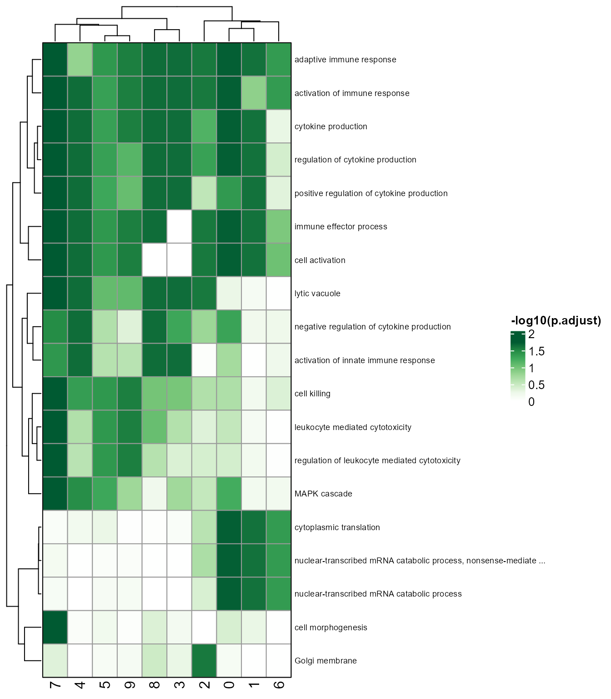
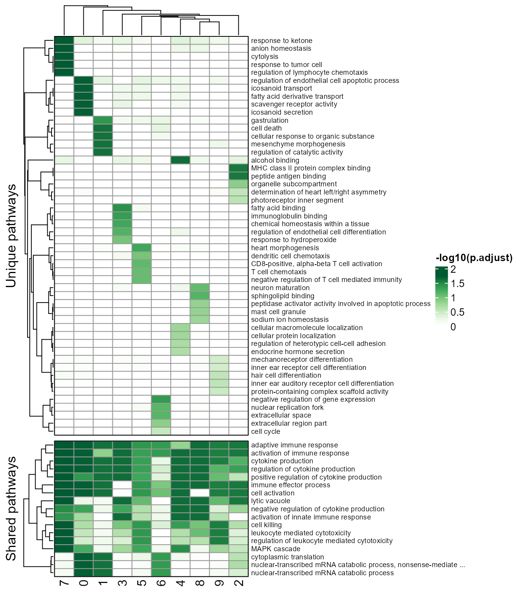
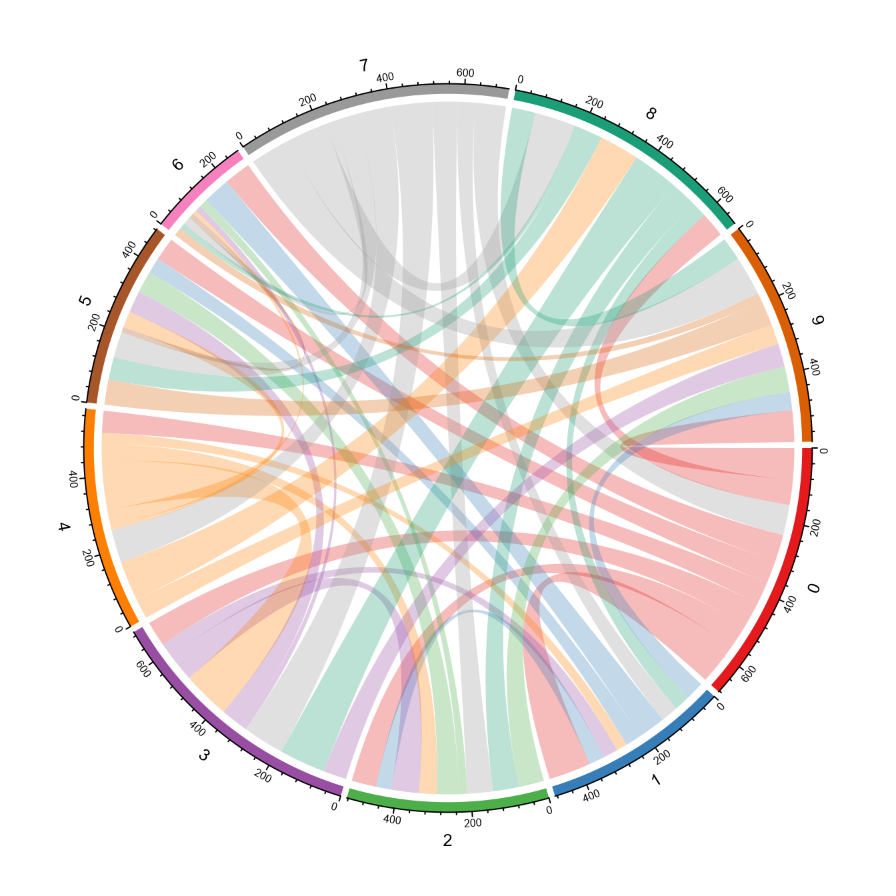
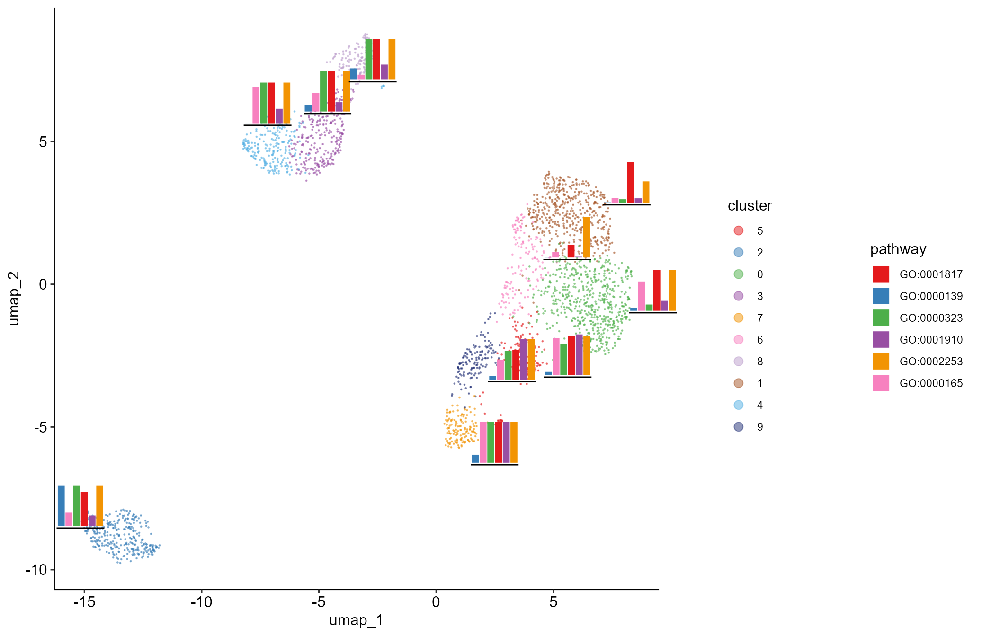

vignettes/visualization_gsea.Rmd
visualization_gsea.RmdFirst, please make sure that you have previously performed the pre-processing and GSEA steps, see Pre-processing.
CellFunTopic provides a variety of meaningful visualization methods of GSEA Result, facilitating functional annotation of cell clusters in single cell data. What’s more, the visualization can be explored interactively in the built-in shiny app, see Visualize in Built-in Shiny APP.
# Heatmap of GSEA result
gseaHeatmap(SeuratObj, by = "GO", toshow = "-logFDR", topPath = 5, colour = "Greens", fontsize_row = 7)
# Heatmap showing unique and shared pathways of clusters.
pathway_unique_shared(SeuratObj, by = "GO", toshow = "-logFDR", topPath = 5, colour = "Greens", fontsize_row = 7)
# Helps to infer the relationship between clusters. Link width shows Pearson correlation or Jaccard coefficient between clusters, calculated with GSEA result. Node size indicates cell number of each cluster.
clustercorplot(SeuratObj, by = "GO", link_threshold=0.3, vertex.label.cex=1, weight.scale=T)
# clustercorplot_jaccard(SeuratObj, by = "GO", link_threshold=0.3, vertex.label.cex=1, weight.scale=T)
# show relationship between clusters and pathways
hierarchyplot_tree(SeuratObj, by = "GO", topaths = 5, cluster_cutree_k = 6, pathway_cutree_k = 10,
vertex.label.cex=0.5, edge.max.width=1, vertex.size.cex=0.7)
# Scatter plot showing pathway enrichment score on cell map
pathwayScatterplot(SeuratObj, by = "GO", reduction = "umap", pathwayID = "GO:0030217", pointsize = 0.5, label = F)
# Link width shows number of intersection of pathways between clusters
circleplot(SeuratObj, by = "GO", pvaluecutoff = 0.001, link_threshold = 10)
# show embedded histogram or pie chart on UMAP/TSNE plot
embeddedplot(SeuratObj, type = "pie")
embeddedplot(SeuratObj, topaths = 1, reduction = "umap", type = "hist")
# Network of cosine similarity between terms
cosine_network_term(SeuratObj, cosine_cal_by = "GSEA result", pie_by = "GSEA result", GSEA_by = "GO",
topn = 10, layout = "fr", cos_sim_thresh = 0.9, radius = 0.1, text_size = 2)
# Network showing cosine similarity between clusters according to GSEA result
Cosine_networkByGSEA(SeuratObj, layout=igraph::layout_with_fr, cos_sim_thresh=0.8, p.adjust_thresh=0.05, SEED=123, node.cex=6, width_range=c(0.8, 4), vertex.label.dist=0.5)
# Hierarchical edge bundling plots helps visualizing correlation or similarity between clusters
SeuratObj$group <- 'majorcelltype' # edge_bundling_GSEA need major group information
edge_bundling_GSEA(SeuratObj, link_threshold=0.7, p.adjust_thresh=0.05, link_width=0.9, method='cosine similarity', node.by='seurat_clusters', group.by="group")
# show pathways and genes in chord diagram
GOcircleplot(SeuratObj, genes=NULL)
# boxplot showing enrichment score of child or parent GOs of specific GO
GOboxplot(SeuratObj, goid = "GO:0030217", type = "child")